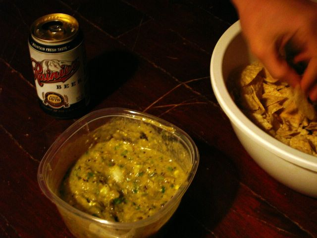
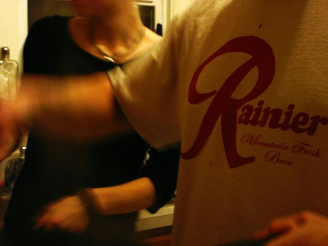
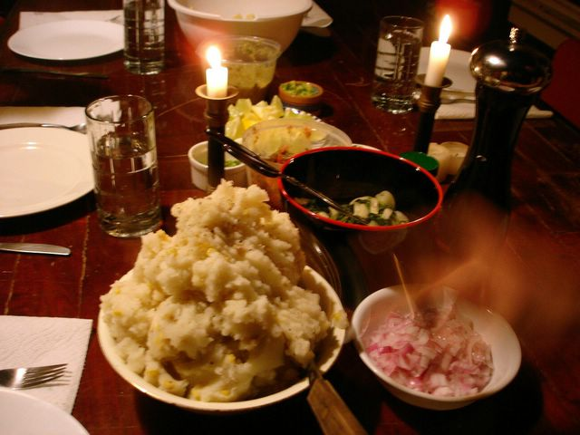
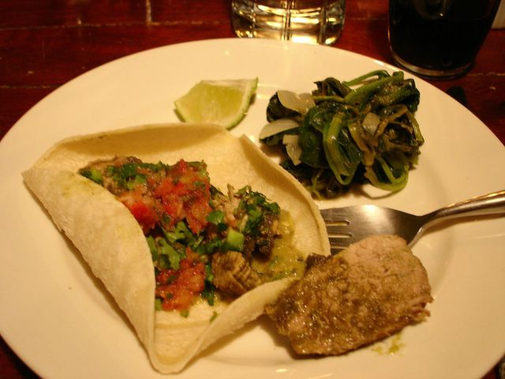
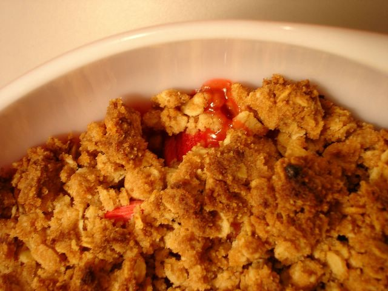

Praise for the pig
Here in Seattle, something is going on. Sunlight is pouring in through my bedroom window at an obscenely early hour (sunrise: 6:05 am), daffodils are sprouting from every yard and florist, and my portly bus driver—the year-round optimist—is no longer the only one wearing shorts. This has nothing to do with the vernal equinox or that start-of-spring nonsense everyone is twittering about. No, dear reader, Seattle is aglow because it’s Pork Week.
By most accounts, the first celebration of Pork Week occurred five years ago, when two transplanted Southerners decided to consecrate 1/52nd of their year to uninterrupted praise of the pig. Inspired by a pig roast held by some friends, Mark and Justin—sharing slightly twangy accents and, at the time, a house—declared the first full week after St. Patrick’s Day to be Pork Week. Forget the leftover corned beef in the fridge: among this small crowd, from the first Sunday after St. Patrick’s Day through the Saturday that follows, pork must be consumed at least once a day.* Communal dinners are held a couple times over the week—this year, it’s Tuesday and Thursday, with a “gala” finale on Saturday—and other days, the observant fend for themselves.
Transcending the bacon and pork chops of their homeland, these Southerners are doing the pig proud with a variety of marinades; hot, smoky peppers; fiery orange sauces; Cuban black beans and rice; and, as rumor has it, mojitos.
“This is a story of growing up,” Mark said, meat thermometer in hand.
“It’s a coming-of-age story,” Justin affirmed.
And because Mark is the boyfriend of my dear friend Keaton—and because I won his heart by singing “Nine to Five” and “The Gambler” over a pool table last summer—I was invited to join in Tuesday night’s festivities. Upon arrival, Keaton and I were enthusiastically greeted by Mark’s two pit bulls, Maynard and Elsa, and the evening began with glasses of Shiraz for the ladies and Rainier (the house beer) for the men. In the kitchen, Mark and Justin were hard at work on a Mexican-inspired spread, with plenty of lemons, limes, cilantro, and jalapenos in attendance. The rest of us set right to work in our own way, clustering around the tortilla chips and Justin’s improvised tomatillo-avocado salsa and pico de gallo.

Mark claims that chemistry—a graduate-school stopover before he landed in his current field, metalwork—taught him how to cook, and how certain flavors and techniques work together. Food scientists are all the rage these days, from Harold McGee to Shirley Corriher and Alton Brown, but frankly, they could take a few style tips from Mark, what with his canine sidekicks (begging fiercely but respectfully) and his Rainier t-shirt.

The man knows his way around a piece of meat. While Mark carved, we set the table and laid out the spread: sautéed spinach with onions; a mountain of roasted-corn mashed potatoes; warmed corn and flour tortillas; and small bowls of red onion, diced tomato, mashed avocado, lemon and lime wedges, minced jalapenos, chopped cilantro, and sour cream.

And then Mark emerged from the kitchen with the centerpiece and the reason we’d come: two beautiful roasted pork tenderloins, wallowing happily in a sauce of sautéed and pureed poblano-ish peppers. The sauce was a deep olive green, thin but complexly flavored with a variety of ingredients Mark would not reveal, though he did concede that my guess of cinnamon was correct. I blushed with pride. We tucked the meat into warm tortillas slathered with salsa and avocado, squeezing lime juice over the top and reaching impatiently for more cilantro and jalapeno. I downed two drippy, overflowing tacos with ease and went back for another slice of pork. And next to me, Keaton, who only recently had a nightmare involving a pig slaughter and lots of squealing, stifled her tentative plans for a return to vegetarianism with two tacos of her own. You’d better believe Seattle was aglow.

By that point, dessert was almost an afterthought, but we managed to find room for a modest and messy rhubarb crumble, my nod to spring.

Even Mark—whose sweet tooth is, as Keaton explains it, the size of a pea—cleaned his plate. Evidently, Pork Week brings out the best in all of us. Thank goodness it’s only Wednesday.
*Mark and Justin welcome sponsorship. National Pork Producers Council, this is your chance.
Rhubarb Crumble
1 ¼ cups unbleached all-purpose flour
¾ cup muscovado (or light brown, if you prefer) sugar
½ cup rolled oats
6-7 Tbs canola oil
1 lb rhubarb, cut into ¾-inch pieces
Scant ¾ cup granulated sugar
Zest of half an orange
½ tsp ground cinnamon
In a medium bowl, combine 1 cup flour, muscovado sugar, oats, and oil, mixing well with a spoon or your hands until the mixture holds together in clumps and all the flour is incorporated. Refrigerate for 30 minutes.
Preheat the oven to 375 degrees Fahrenheit.
In another bowl, combine the rhubarb with the granulated sugar, the remaining ¼ cup flour, orange zest, and cinnamon. Transfer the rhubarb mixture to an ovenproof baking dish, and distribute the oat topping evenly over the rhubarb. Bake for 35 minutes, or until golden and bubbly. Serve warm, with good-quality vanilla ice cream.
Serves 4-6, or 7, if you’ve eaten lots of pork.